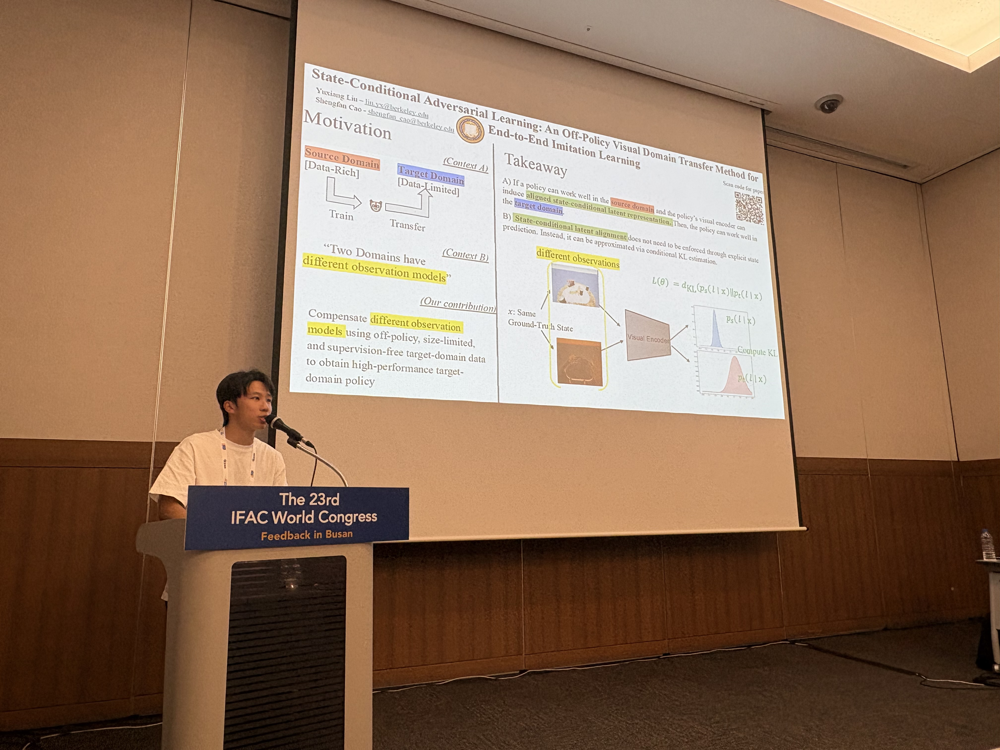
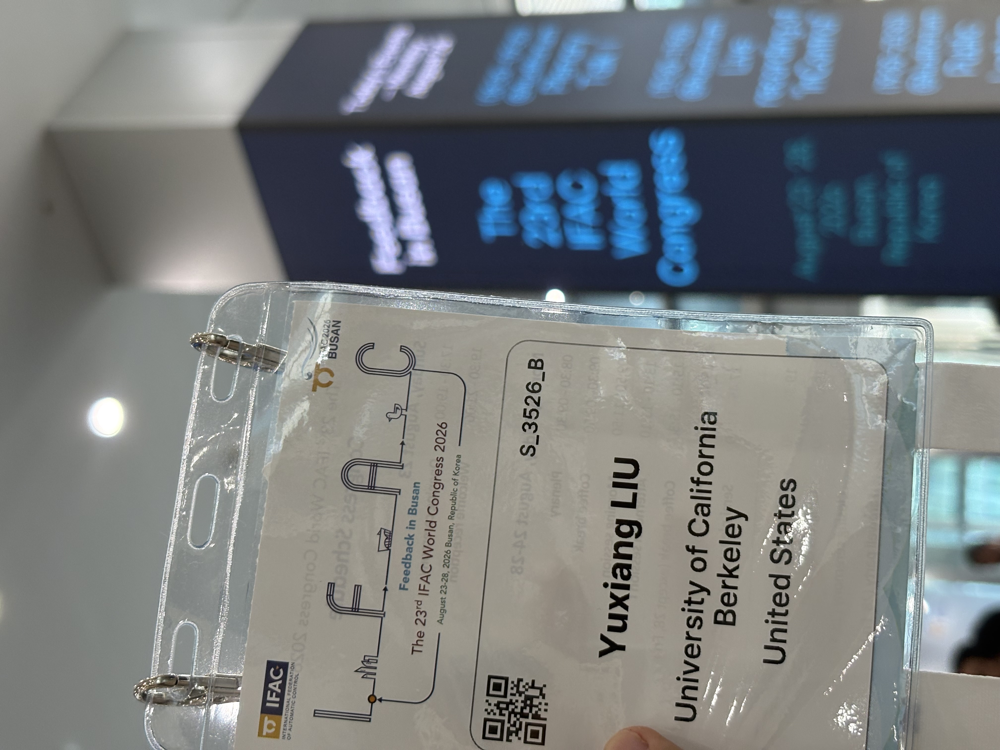
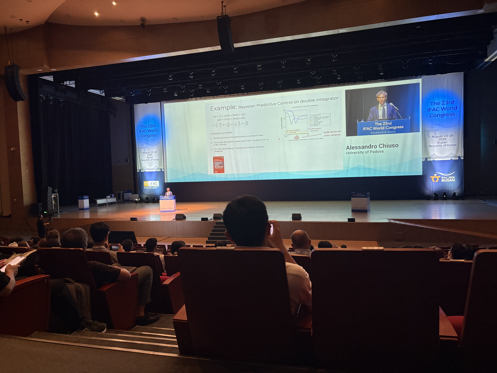

This is Yuxiang Liu, a third-year undergraduate at UC Berkeley. I was glad to present my work at the 23rd IFAC World Congress (International Federation of Automatic Control) in Busan, South Korea. Along the way I met many people working in control, and I came away with a deeper understanding of the field. Here are two reflections I want to write down.

1. Control and robotics are separating at a remarkable pace
Control and robotics (embodied intelligence), once an inseparable community, are separating at a remarkable pace.
At this IFAC I got to appreciate many beautiful mathematical results, which took me back to my early days working with MPC: guarantees of convergence, all kinds of imaginative mathematical constructions, exquisitely elegant problem formulations—it was gorgeous. You rarely see any of this at conferences like CoRL or ICRA. And yet, out of all the talks I attended, not a single one included a hardware experiment.
Researchers in control love derivations that are small, precise, and elegant, but the price is an extreme simplification of real-world problems. The robotics community, by contrast, cares more about practicality: performing well on actual hardware is what matters most, and the accompanying cost is a lack of theory—the vast majority of arguments stay at the empirical level, with no theoretical guarantees. You can't have it both ways: the same tension holds between beautiful theory and practical usefulness.
I think many people in control will recognize this feeling: the hardest part of a control derivation isn't the derivation itself, but how you abstract a highly complex engineering problem into a reasonable, sufficiently simple mathematical formulation. When the formulation is beautiful enough, the derivation is just doing the obvious thing; when your formulation packs in too many elements of the real problem, even a reincarnated Lyapunov would be at a loss. I'm not trying to argue which side is better or worse—they're two sides of the same coin. But at this conference I clearly felt the distinction between those two sides growing sharper.

2. Korean embodied intelligence companies are still finding their market
Within South Korea, embodied intelligence companies are still working out what kind of product consumers actually need.
Two Korean embodied intelligence companies attended this IFAC, and by coincidence, both sent exhibitors from their marketing departments—the people who, in theory, should have among the clearest reads on the current embodied intelligence market. At their booths, I asked two questions.
A) What do you think the eventual consumer market for embodied intelligence will look like?
Both companies' marketing leads reacted in a similar way: a thoughtful pause, then "that is a tricky question," followed by "physical intelligence is developing fast."
B) In what areas do you think physical intelligence will outperform traditional solutions (for example, robot vacuums or the assembly-line robotic arms used in factories)?
Their answer came in much the same spirit as their response to the first question.
To be fair, this is an honest reflection of how early we still are. The technology is moving quickly, and it may simply be too soon for anyone—marketing teams included—to say with confidence where the consumer market will land.
